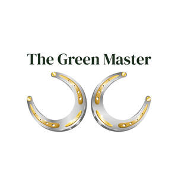

Trade Mark Journal No.2025/038 19 September 2025
UK00004223886 24 June 2025 (9,14,16,20,21,25,28,35)

- Class 9
- Wearable digital devices and communication apparatus, including smartwatches and data-communicating wristbands. Mobile and handheld electronic communication devices; telecommunications devices and apparatus. Electronic control apparatus, remote controls, and wireless controllers for operating other electronic or mechanical devices. Electronic devices for data logging, processing, storage, and transmission; information storage apparatus and memory devices. Computer software and drivers for electronic devices; downloadable mobile applications; electronic game software. Electronic display and imaging devices, including electronic paper displays, tablets, and digital pagers. Audio devices and accessories, namely earphones and microphones. Electronic monitoring and surveillance devices, including baby monitors. Electronic styluses and other electronic components for use with the aforesaid goods. .
- Class 14
- Jewellery and imitation jewellery, including rings, necklaces, bracelets, brooches, charms, pendants, and other ornamental pieces. Watches and clocks; watch straps and bands; parts and fittings for watches and clocks, including watch movements. Jewellery cases, jewellery boxes, and watch boxes. .
- Class 16
- Posters, art prints, paintings (framed or unframed), printed photographs, and graphic art reproductions. Photo albums, sticker albums, and scrapbooks; stickers (stationery). Greeting cards, gift cards, invitation cards, and printed gift vouchers. Gift packaging materials of paper or cardboard, namely gift boxes, gift bags, wrapping paper, and gift tags. .
- Class 20
- Furniture made of wood or plastic, namely tables, chairs, shelves, cabinets, and chests of drawers. Decorative boxes and chests (not of metal). Photo frames (not of metal) and mirrors. Decorative wooden ornaments and figurines for home décor. Non-metal furniture fittings and hardware, namely knobs, handles, and legs. Coat stands and decorative wall hooks (non-metal). Decorative wall panels and interior decorative elements made of wood or plastic. .
- Class 21
- Food storage containers made of glass, wood, or ceramic. Drinkware, namely mugs, cups, and glasses. Tableware, namely plates, bowls, and cutlery (excluding disposable plastic cutlery). Cutting boards, including engraved wooden cutting boards. Decorative home accessories made of ceramic, glass, or wood. Candle holders, lanterns, and vases. Spice containers and kitchen gift sets. .
- Class 25
- Clothing, namely T-shirts, sweatshirts, jackets, trousers, sportswear, and children’s clothing. Headgear, namely baseball caps and winter hats. Socks, underwear, pyjamas, scarves, and gloves. Textile bags, namely cotton shopping bags. Footwear. .
- Class 28
- Toys, games and playthings; stuffed toys and plush toys, including teddy bears; toy vehicles, namely toy cars, toy airplanes and other scale model vehicles, including remote-controlled toy vehicles; board games, card games and puzzles; wooden game sets including chess sets and checkers; educational and creative toys; sporting and recreational goods, namely balls, rackets and fitness apparatus. .
- Class 35
- Retail store services and online retail store services connected with the sale of electronic devices and software, jewellery and watches, printed matter and stationery, including posters, pictures, albums and printed gift cards, furniture and home furnishings, including wooden decorative items, household and kitchenware, including mugs and drinkware, clothing, footwear and fashion accessories, toys, games and sporting goods, including plush toys and toy vehicles; Bringing together, for the benefit of others (excluding the transport thereof), the aforesaid goods, enabling customers to conveniently view and purchase those goods from retail outlets or via an Internet website; Presentation of the aforesaid goods on communication media for retail purposes; advertising, marketing and promotional services relating to the aforesaid goods; Gift-wrapping and packaging services for the aforesaid goods, namely preparing presentation boxes, gift hampers and branded wrapping under the The Green Master trademark. .
Patryk Welna
Representative: Business Concierge MRUKWA Ltd